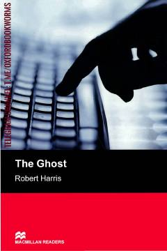

TGSiyosiy sirlar va sirli o'lim haqidagi qiziqarli detektiv roman.
Sobiq Britaniya bosh vaziri Adam Langning xotiralarini yozish uchun yollangan yozuvchi sirli voqealar girdobiga tushib qoladi. U o'zidan oldingi yozuvchining o'limi ortidagi haqiqatni izlar ekan, xavfli siyosiy sirlarni fosh qiladi.